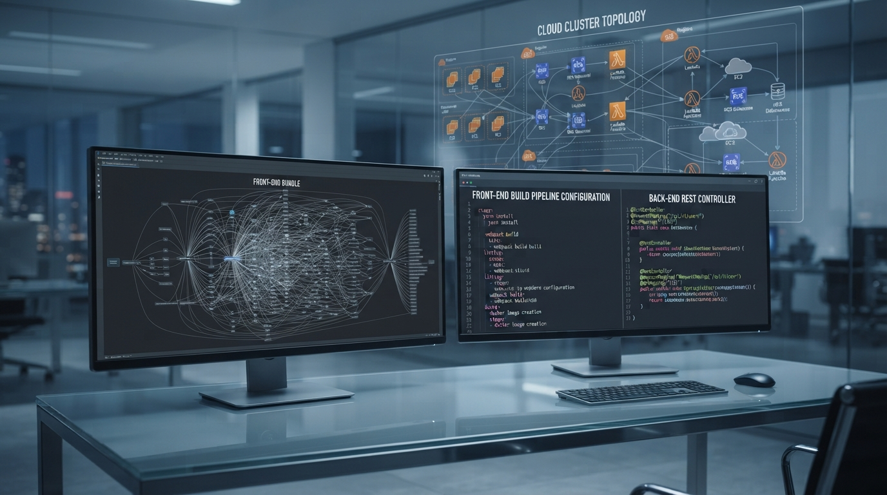

Série: A Evolução Cíclica da TI — Episódio 02
Ato II (2010–2024): A Nuvem, o Boom da Pandemia e a Ilusão das Camadas Desnecessárias

Na virada para a década de 2010, após o mercado digerir o choque da crise financeira global de 2008, a indústria de software tomou uma decisão drástica: decretou a morte do processamento pesado no servidor e transferiu toda a responsabilidade de montagem de telas para o navegador do cliente. O que foi vendido como "modernidade e desacoplamento" acabou se transformando em uma das maiores armadilhas de complexidade acidental da história da computação.
A explosão do ecossistema JavaScript e o inchaço do front-end
Com o surgimento de frameworks como Angular, React, Vue e a consolidação do Node.js, a indústria criou uma esteira tecnológica gigantesca. Para colocar um simples formulário na tela, equipes passaram a depender de transpilers, bundlers (Webpack, Babel, Rollup, Vite), bibliotecas de gerenciamento de estado global (Redux, MobX, Zustand), soluções de estilização dinâmica (CSS-in-JS, Tailwind) e árvores de node_modules com dezenas de milhares de dependências transitórias.
A complexidade que antes ficava contida e controlada no servidor corporativo migrou para a máquina do usuário final em megabytes de JavaScript desnecessários. Desenvolvedores gastavam 70% da sua energia semanal brigando com versões de pacotes, quebras de build e sincronização de contratos de API em vez de resolverem problemas reais de faturamento, estoque ou logística.
A divisão artificial: a criação de feudos corporativos
Essa hipertrofia do front-end provocou uma cisão cultural desastrosa no mercado: a divisão quase religiosa entre "quem faz front" e "quem faz back".
Criou-se a figura do programador que domina doze classes utilitárias de um framework CSS moderno, mas não sabe o que é uma transação de banco de dados, nunca escreveu um prepared statement e não faz ideia de como o protocolo HTTP se comporta debaixo do capô. Do outro lado, especialistas em backend passaram a se distanciar da experiência do usuário, limitando-se a expor endpoints JSON genéricos sem qualquer visão do fluxo operacional.
Essa compartimentação inflou os custos de desenvolvimento. O que antes um desenvolvedor sênior full-stack resolvia de ponta a ponta passou a demandar squads inteiras com especialistas em layout, especialistas em estado visual, arquitetos de API e integradores intermediários.
A ilusão do boom da pandemia (2020–2022)
Essa arquitetura inchada e cara encontrou seu apogeu durante o boom digital da pandemia de 2020 a 2022. Com taxas de juros globais próximas de zero e capital de risco abundante, as empresas de tecnologia entraram em um frenesi de contratação em massa. O mantra era o "crescimento a qualquer custo".
Salários dispararam artificialmente, profissionais com pouca rodagem técnica eram promovidos a seniores em meses, e qualquer pessoa que concluísse um curso rápido de JavaScript encontrava vagas com remuneração inflada. Parecia que a tecnologia havia entrado em um ciclo perpétuo de bonança.
O choque de juros altos e o fim do "dinheiro grátis"
A ilusão desmoronou quando a inflação global pós-pandemia forçou os bancos centrais (especialmente o Federal Reserve americano e o Banco Central brasileiro) a elevarem os juros com força. O dinheiro barato acabou.
De repente, investidores deixaram de cobrar métricas de vaidade (número de usuários cadastrados ou tamanho da equipe) e passaram a exigir o que todo negócio saudável sempre precisou demonstrar: eficiência operacional, margem e lucratividade real. O resultado foi a onda global de demissões em massa e o congelamento drástico de contratações.
O mercado iniciou um processo forçado de deflação salarial: as vagas de entrada (júnior) evaporaram quase por completo, e o antigo salário de sênior foi comprimido para a faixa de pleno. O mercado amadureceu à força, expulsando a especulação e preparando o terreno para a próxima ruptura técnica.
O precedente esquecido: do No-Code à automação de telas
Quem tem memória técnica lembra que esse mesmo pânico já havia ocorrido nos anos 2010 com a ascensão das ferramentas No-Code / Low-Code. Na época, dizia-se que ninguém mais precisaria programar porque telas e cadastros seriam montados com arrastar e soltar.
O que a realidade comprovou? Que gerar telas fáceis qualquer ferramenta faz. O verdadeiro gargalo da engenharia de software sempre foi garantir a integridade dos dados, evitar condições de corrida (race conditions) na concorrência de acessos, calcular regras fiscais complexas e manter sistemas funcionando 24/7 sem interrupção. O valor nunca esteve na cor do botão — sempre esteve na regra e nos dados.
Com a chegada da Inteligência Artificial em um ambiente de alta cobrança por eficiência, essa lição histórica ressurge com força total, decretando o colapso definitivo das camadas intermediárias desnecessárias.
Dicionário de Termos Técnicos e Negócios (para leigos)
Termos essenciais para entender a transformação da nuvem, a corrida do front-end e o mercado pós-pandemia:
- Single Page Application (SPA)
- Modelo em que o navegador baixa uma aplicação inteira em JavaScript e monta as telas na máquina do usuário, dispensando o servidor de desenhar o HTML tradicional.
- Ecossistema NPM / Dependências
- Biblioteca global de códigos e pacotes de terceiros; frequentemente leva projetos a dependerem de milhares de módulos externos para montar telas simples.
- Venture Capital (Capital de Risco)
- Fundos de investimento de alto risco que injetaram bilhões em empresas de tecnologia durante a pandemia, incentivando contratações infladas sem foco em lucratividade imediata.
- Achatamento Salarial
- Correção de mercado onde a escassez de vagas e a subida de juros globais forçaram salários de seniores a recuarem para patamares antes pagos a profissionais plenos.
- No-Code / Low-Code
- Plataformas visuais de criar sistemas sem digitar código; provaram que montar telas é fácil, mas que a complexidade real reside nas regras de negócio e nos dados.
- API REST
- Padrão de mensagens e endereços na web que permite a sistemas independentes trocarem dados em formato JSON de forma segura e organizada.
Nota: Segundo ensaio da trilogia A Evolução Cíclica da TI (Fiction-Based Technical Insights & Engineering Realism).